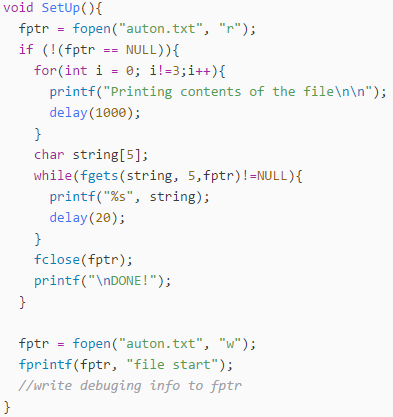
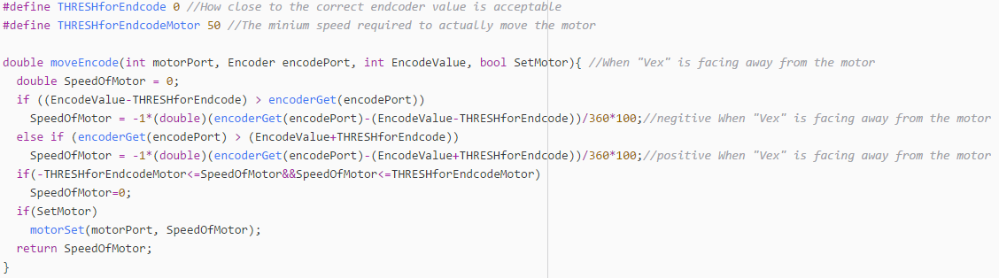
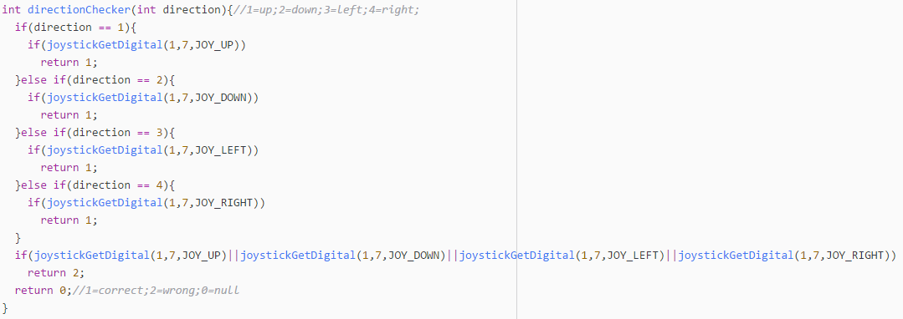
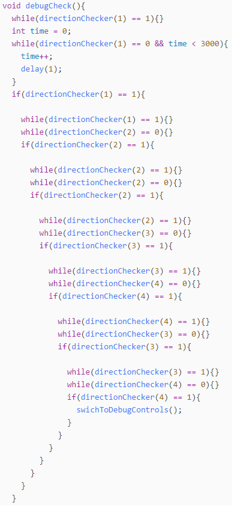
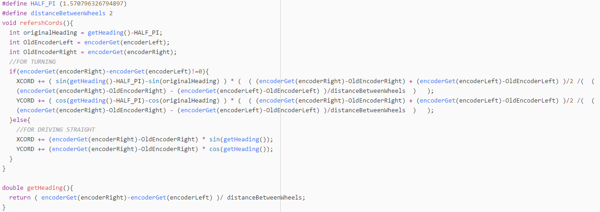

File Retrieval

In the process of developing an auton recorder, a need for a programming cable rose. Not only to debug the code by also to send recorded data back the computer. The following is a workaround for the lack of a programming cable.
An important niche detail about PROS is that when the cortex is unplugged from a controller or computer and then reinserted, the code runs from the beginning as if it was just power cycled but the files on the cortex stay. A key detail to remember is that the files are still stored in RAM which means they will disappear if you power cycle.
Using this key detail, it is possible to write debugging information to a file during normal operation and extract it afterward.
Note:
In order to receive the file data after plugging the cortex into the computer, you need to open the PROS terminal.
encodeMove

When building a super accurate auton recorder, being able to act off of record sensor data is vital. This function allows a motor and a corresponding motor to get to any inputted state. If using this in an auton recorder, simply call this function until the function returns 0. At this point move on to replicating the next sensor value.
Building an auton recorder in the way also allows for more compact recorded data. This method only needs a final state for any action made, compared to the traditional recording every change to the motor's speed.
Note:
V5 motors have encoders build into them so functions like this one will be useful and add zero extra cost or bulk to the robot
Debugging Mode


Pressing Up Up Down Down Left Right Left Right on button group 7 enables the mode. This is the Konami code and it was chosen because it is memorable but next to impossible to accidentally hit. The code to the left of this is the code to detect if the Konomi code was pressed on button group 7 (left button group).
When enabled, every motor corresponds to two buttons. Each one corresponding to a power of either 127 or -127 (full speed forward or full speed reverse). Because there aren't enough buttons for all 10 motor ports, the 3 and 2 axes are also used (with a positive joystick value corresponding with a positive motor direction and vise versa)
Note:
Call debugCheck when the up button on the left button group is pressed
Locator

This code treats the ground as a coordinate plane and updates the robot's coordinates accordingly. Effectively telling the robot it's current position. This could, in theory, be used to make an auton without being in possession of a robot. In addition, it could be added to competition code to make the driver control code simpler.
It finds the current heading of the robot by subtracting the values read from each encodes and dividing it by the distance between the wheels. By subtracting the values, you are left with the net amount one wheel has moved more than the other. This means you can treat it as a circle with one wheel as the center and the other one tracing out an arc. Using the formula arc length = radius * angle (in radians) you can find the current angle the robot is at.
If the robot is driving straight, you can just take the current angle and use the distance traveled to update the coordinates. If the robot is driving with some sort of curve (which is the case most of the time) You find the displacement of each wheel and then take the average to find the position of the center point of the robot.
Note:
The code assumes you have a tank drive with an encoder on each wheel. For next year's parts (V5) the motors will have built-in encoders making implementation of this code simple.